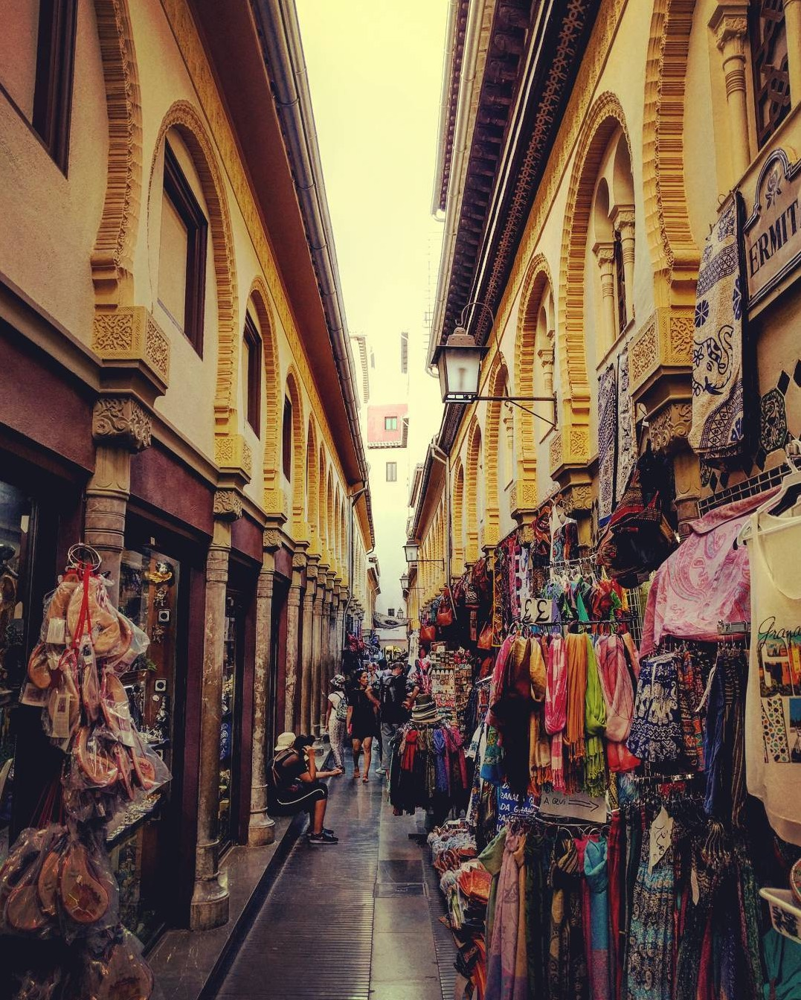
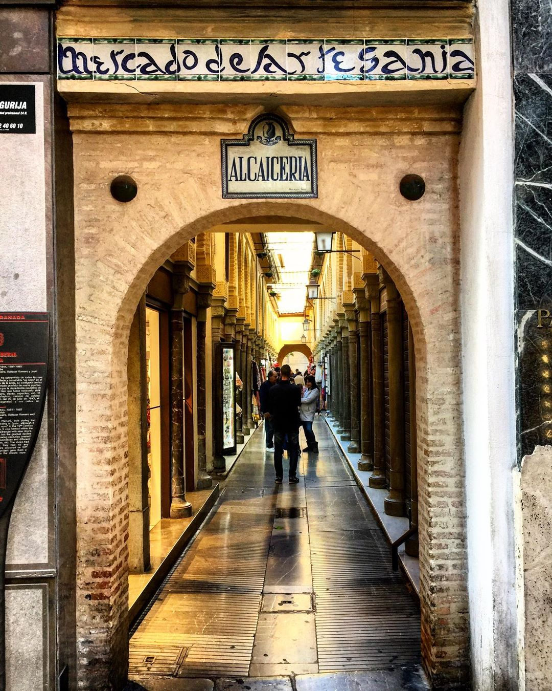

Ubicada en las inmediaciones de la Catedral, la Alcaicería de Granada de hoy está dedicada a las tiendas de artesanía granadina, donde se venden la popular loza de Fajalauza, la incrustación de madera o taracea, y las farolas de cristal coloreado. También incluye comercios como librerías, joyerías y establecimientos hosteleros.
La Alcaicería de Granada es un barrio típico de la cultura musulmana, formado por estrechas callejuelas en torno a las cuales se alineaban las casas y se ubicaba el zoco o el mercado donde se fabricaba y vendía la seda. El Gran Bazar de Granada se extendía desde Plaza Nueva hasta la Plaza Bib-Rambla, en el mismo núcleo de la medina islámica, cerca de la mezquita aljama. El origen del nombre árabe es latino.
Las primeras referencias que se tienen sobre la Alcaicería de Granada se encuentran en una carta del sultán nazarí Abu Nasr Saad en la que se realiza la venta de dos tiendas situadas en ese lugar.
Tras la conquista por los Reyes Católicos, pasó a denominarse Real Sitio y Fuerte de la Alcaicería de Granada, debido a que, al pertenecer al patrimonio regio, se puso bajo el gobierno de los Marqueses de Mondéjar, alcaides y capitanes generales de La Alhambra y del Reino de Granada. El gobernador de la Alcaicería era nombrado directamente por el gobernador de La Alhambra, pertenecía siempre a la nobleza y residía en el recinto comercial. Se encargaba de dirigir la vigilancia del recinto, del control de los horarios de apertura y cierre, y también del mantenimiento del lugar mediante inspecciones diarias. El conjunto estuvo vinculado a la Corona de Castilla desde 1492 hasta 1868.
En el siglo XVI tenía cerca de 200 tiendas, todas de pequeño tamaño con una única puerta abatible, pintada de ocre rojo, que servía también de persiana para proteger las mercancías de la lluvia y el sol. En aquella época destacaba ya el pavimento de mosaico con motivos románicos y árabes, número que se redujo a la mitad en las dos centurias siguientes (117 puestos en 1787), debido a la decadencia paulatina del arte de la seda. Para paliar sus efectos se abrieron otros negocios textiles (paños, lienzos, oro, lino), así como trabajos en cuero, zapatos, cacao, especias, etc. Se accedía al conjunto por 10 puertas (una más que en época islámica), de cuyos arcos pendían cadenas de hierro que lo identificaban como de privilegio real e impedían el paso de cabalgaduras, mientras que en su cara interna se ubicaban altares o tribunas con imágenes devocionales dedicadas a Nuestra Señora. Las calles, de empedrado granadino, eran angostas y producían una sensación laberíntica, más por su número que por trazado, pues se piensa que eran casi ortogonales. Muchas de ellas desaparecieron para levantar almacenes y huertos primero, y luego edificios de renta
El 20 de julio de 1843, un incendio declarado en una tienda de cerillas de la Calle Mesones, lo destruyó por completo. Se reconstruyó con un estilo neo árabe y romántico, muy de moda en el siglo XIX, de la mano de los arquitectos Salvador Amador, Juan Pugnaire, Baltasar Romero y José Contreras. El trazado original fue modificado, alineando algunas calles así como ensanchando algunas de ellas y reduciendo el espacio de su ubicación.
En la actualidad, además de punto de referencia turístico, se pueden encontrar infinidad de productos de artesanía árabe, recordando y trasladando al visitante a las calles de los bazares árabes donde regatear el precio es parte de la tradición, y siempre podrá obtenerse algún obsequio por parte de los comerciantes.